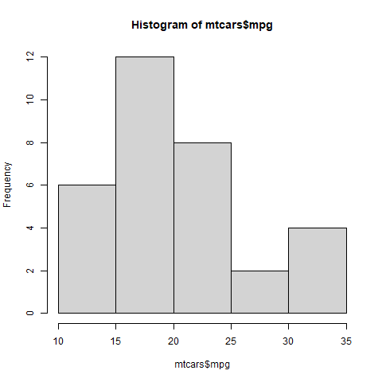

# Section 1
Hello
# Section 2
WorldUsing Quarto
14.1 Introduction
A significant part of your role as a data analyst involves communicating results clearly through reports.
Quarto is a powerful reporting tool that integrates seamlessly with RStudio. It allows you to combine:
- Narrative text
- R code
- Tables
- Visualizations
And render them into multiple output formats including:
- HTML
- Word
- PowerPoint
- RevealJS slides
- Dashboards
In this lesson, we will learn how to use Quarto within the RStudio environment.
14.2 Learning Objectives
By the end of this lesson, you should be able to:
- Create and render a Quarto document using R
- Output documents in HTML, PDF, Word, and PowerPoint formats
- Understand basic Markdown syntax
- Use code chunk options to control execution and output
- Display tables and plots inside Quarto documents
14.3 Installing Quarto
- Install Quarto from quarto.org.
- Verify installation in your terminal:
quarto –version
- Install TinyTeX for PDF rendering:
quarto install tinytex
Install required R packages:
install.packages(c("dplyr", "plotly", "DT"))14.4 Creating a New Quarto Document
In RStudio:
File → New File → Quarto Document
Save it as:
first_quarto_doc.qmd
Add:
Click Render to generate HTML output.
14.5 Adding Code Chunks
Code chunks in R:
2 + 23 * 3Shortcuts:
- Ctrl + Enter → Run current line
- Ctrl + Shift + Enter → Run entire chunk
14.6 YAML Header
Example YAML header:
---
title: "My First Quarto Document"
author: "Your Name"
format: html
---To embed resources:
format: html: embed-resources: true
14.7 Output Formats
Try changing format in YAML:
- html
- docx
- pptx
- revealjs
- dashboard
Example:
format: pdf
14.8 Markdown Basics
### Headers
# Level 1
## Level 2
### Level 3
### EmphasisThis is italic and this is bold.
### Lists
- First item
- Second item
### Links
[Example Link](https://example.com)14.9 Code Chunk Options
Hide code but show output:
Global option example:
execute: echo: false
14.10 Displaying Tables
Use built-in dataset:
head(mtcars)Interactive table (HTML only):
library(DT)
datatable(mtcars)14.11 Displaying Plots
Histogram using base R:
hist(mtcars$mpg)Interactive histogram using Plotly:
library(plotly)
plot_ly(
mtcars,
x = ~mpg,
type = "histogram"
)14.12 Saving Plots for Static Outputs
png("mpg_hist.png")
hist(mtcars$mpg)
dev.off()Include image:

14.13 Practice Exercise
- Create a Quarto document.
- Add:
- A title
- Two sections
- One R code chunk
- One histogram using mtcars
- Render to HTML.
- Change format to PDF and render again.
14.14 Wrapping Up
In this lesson, you learned how to:
- Create Quarto documents in RStudio
- Use Markdown formatting
- Add R code chunks
- Control execution behavior
- Render to multiple formats
- Display tables and interactive Plotly graphs
Quarto is a core professional reporting tool for R users.
See you in the next lesson.